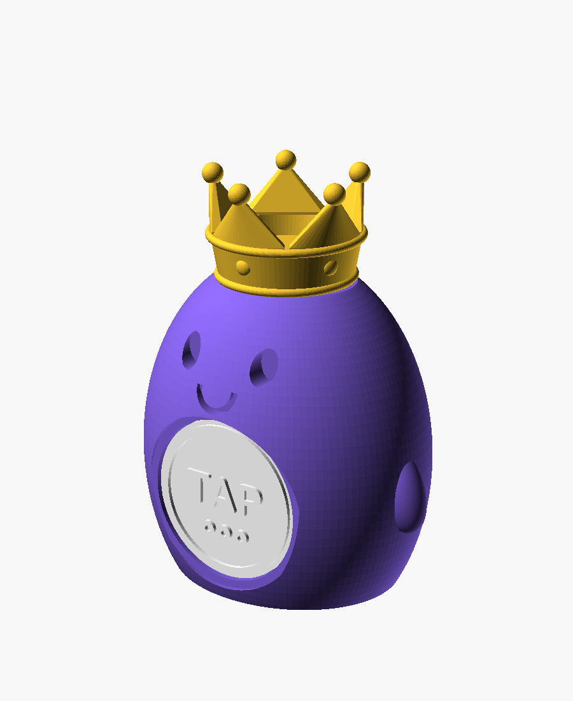

1. Fav, the egg buddy Current
Purple · round, friendly, simplest to print
A soft character with a big round belly badge. Not tied to any one thing, so it can become whatever FavCircles needs.
Pros
- Cutest and most "toy-like"
- Prints with no supports
- Accessories stand out
Cons
- Doesn't say "places" or "rewards" by itself